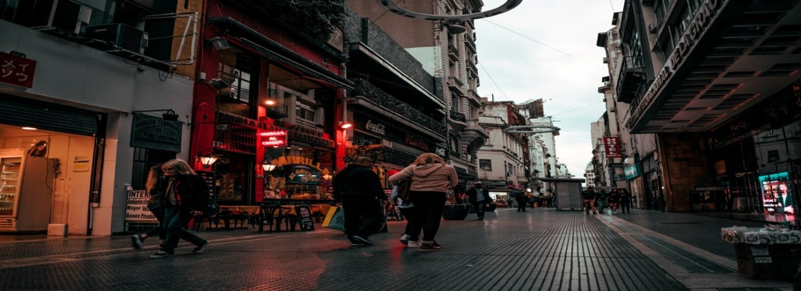
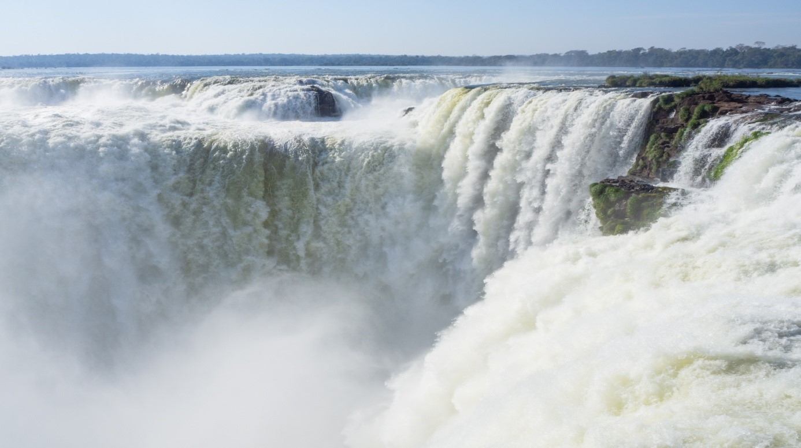
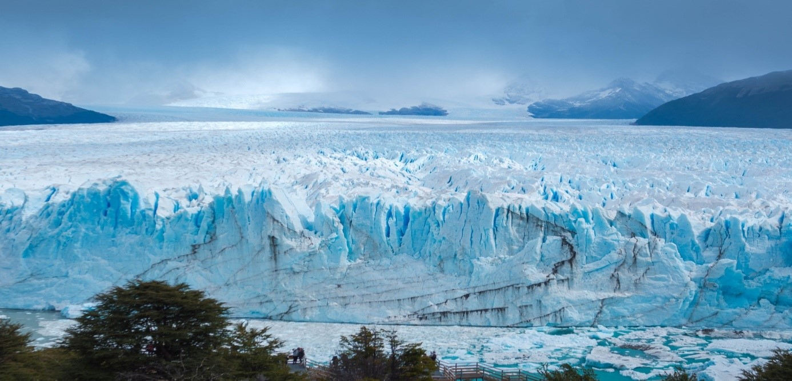
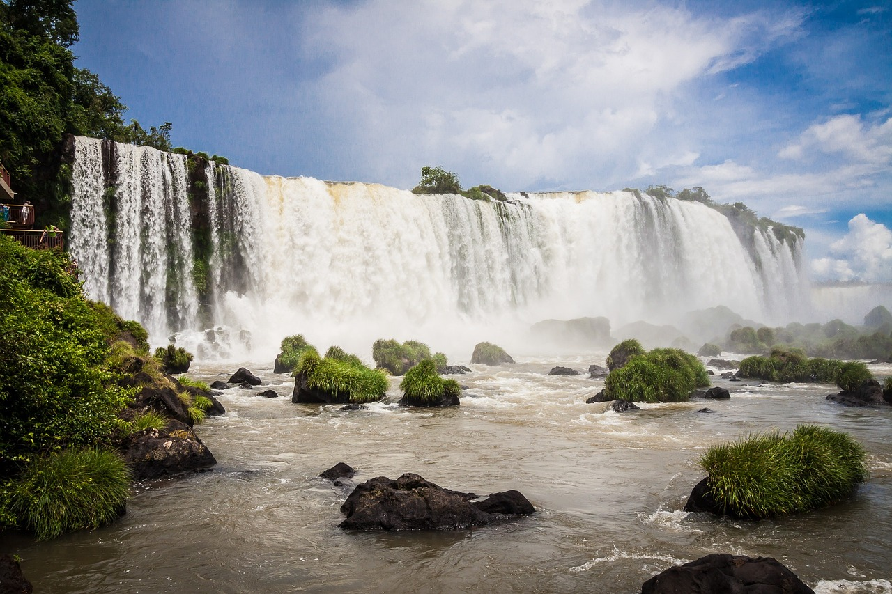
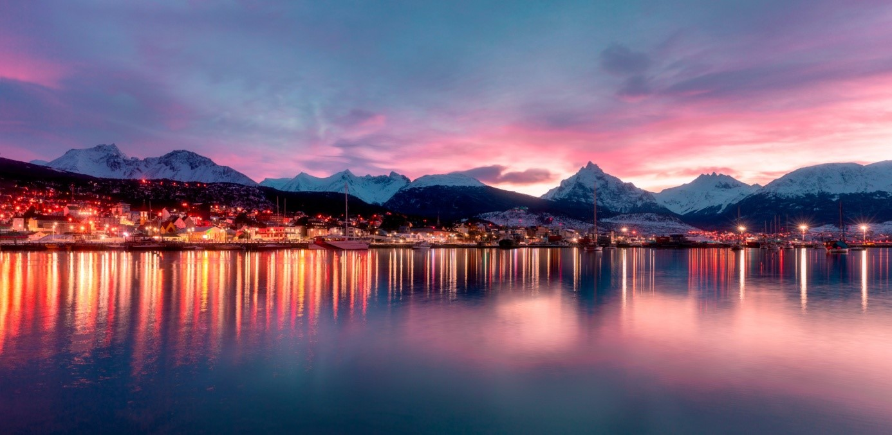

Buenos Aires, la métropole vivante aux mille couleurs
Crédit photo : Wesley Souza
Capitale de l'Argentine, Buenos Aires est qualifiée d'être la ville la plus européenne de l'Amérique Latine. En effet, l'architecture de certains quartiers rappelle celle des grandes métropoles comme Naples, Madrid ou Paris. N'hésitez pas à faire une halte dans les puertas cerradas, des bars et restaurants locaux.

Les Chutes d'Iguazú, des cascades à couper le souffle
Crédit photo : Ana Benet
Les 275 cascades et chutes d'eau du parc national d'Iguazú offrent un spectacle unique et hors du commun. Se trouvant entre l'Argentine et le Brésil, elles font partie des lieux incontournables à voir pour ceux qui aiment la nature.

Perito Moreno, le glacier le plus vivant de Patagonie
Crédit photo : Kristina Gain
Se trouvant en Patagonie, à 75 km de la ville d'El Calafate, le majestueux glacier Perito Moreno, vous en met plein les yeux. Mesurant 3 km de long, 5 km de large et une hauteur de 180 mètres, il est classé à la 3ème place des plus grandes calottes glacières de la planète.

Garganta Del Diablo, une cascade naturelle impressionnante
Crédit photo : Jonny Lew
La cascade de la Gorge du Diable ou Garganta Del Diablo se situe au sein du parc national d'Iguazú. Ayant la forme de la lettre U, les eaux de la rivière se déversent à une hauteur de 82 mètres. En empruntant la passerelle qui se trouve au-dessus de l'eau, vous admirerez un vue impressionnante de la cascade.

Ushuaïa, la dernière ville au bout du monde
Crédit photo : Francisco Paez
Même si Ushuaïa est une ville isolée située à l'extrême sud de l'Argentine, elle ne cesse d'attirer les visiteurs provenant des quatre coins du monde. En effet, elle est le dernier lieu où l'on peut encore trouver la civilisation avant d'accéder à l'Antarctique.
Prêt à découvrir d'autres destinations ?
Découvrez également nos 8 destinations où partir en Espagne en 2023
Voir les destinations en Espagne